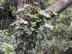
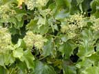
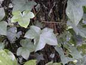
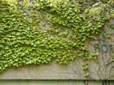

Ivy
Hedera helix
Other names
English ivy
Description
Ivy is a woody climbing or creeping vine with aerial roots. It has glossy evergreen leaves that have a leathery texture with the underside of the leaf being paler. Other possible variations in colour include yellow green edging of the leaf to yellow green all over. The young leaf is 3 or 5 lobed with the central lobe being the longest and the adult leaves are entire and can range in diameter from 4 to l0cm. Flowers yellowish green in globular clusters; smooth black globular berries approximately 8mm in diameter in winter.
Similar plants
Other ivies. Boston ivy (sometimes confused with Virginia creeper) has similar shaped leaves but is deciduous. Probably not toxic. German ivy and Cape ivy (toxic) have similar shaped leaves but are related to ragwort. They do not have aerial roots or suckers.
Distribution
Native to UK but found throughout the world. Many garden forms (derived from subspecies) are widely planted, especially as ground cover on steep banks. In NZ both the wild and cultured plants are widely distributed. They can be found climbing up trees and walls and are very tolerant of shade which contributes to their ability to grow in most habitats.
Toxin
Hederasaponins A and B which are partially hydrolysed to toxic substances m and b hederins by the removal of sugars. All parts of the plant are toxic to individuals sensitive to the plant, with the berries and leaves being especially toxic. There has been a case of poisoning in poultry after eating the seeds. Only toxic when eaten in large amounts. Decoctions have been used as an insecticide.
Species affected
Overseas, poisonings have been reported in sheep, cattle, deer, dogs and children. At the present time there have not been any reported cases of poisonings in NZ.
Clinical signs acute
In small quantities ivy can have a purgative effect and cause diarrhoea, while in large quantities it can lead to excitement, ataxia, staggering, muscle spasms or conversely coma. It also causes breathing difficulties.
Clinical signs chronic
Post mortem signs
Gastroenteritis.
Diagnosis
There are no simple or quick tests for diagnosis of ivy poisoning. Diagnosis is made on history of exposure to the plant, and clinical signs.
Differential diagnosis
A potential differential diagnosis for ivy poisoning is milk fever which is relatively common and would be more likely to be suspected with these signs.
Treatment
For animals that have ingested large quantities of ivy emesis should be induced or gastric lavage performed.
Prognosis
Unless ingested in very large amounts prognosis is usually good.
Prevention
References
Conner H.E. The Poisonous Plants In New Zealand. 1992. GP Publications Ltd, Wellington
Cooper, M.R. Johnson, A.W. (1984) Poisonous Plants in Britain and their Effect on Man and Animals Her Majesty’s Stationary Office
Stewart, J. Plants in New Zealand Poisonous to Man AR Shearer, Government Printer
Upritchard, E.A. (1993) A Guide to the Identification of New Zealand Common Weeds in Colour NZ: NZ Plant Protection Society Inc.
|  plant |
 |
|
|
 |
|
|
|
|
||
|
 |
|
|